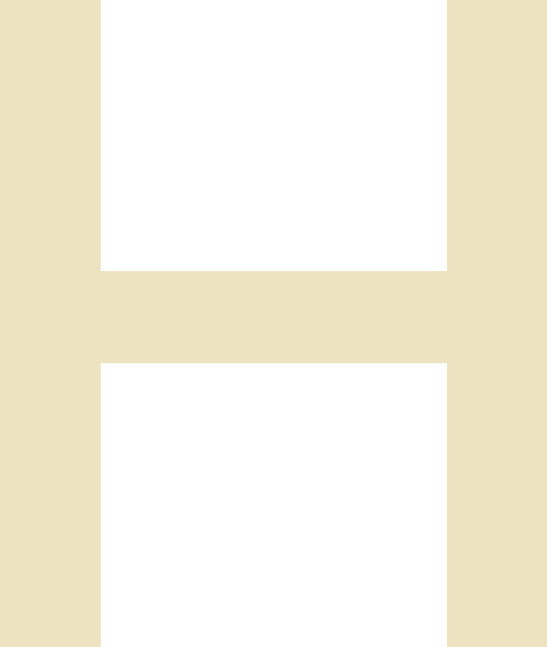
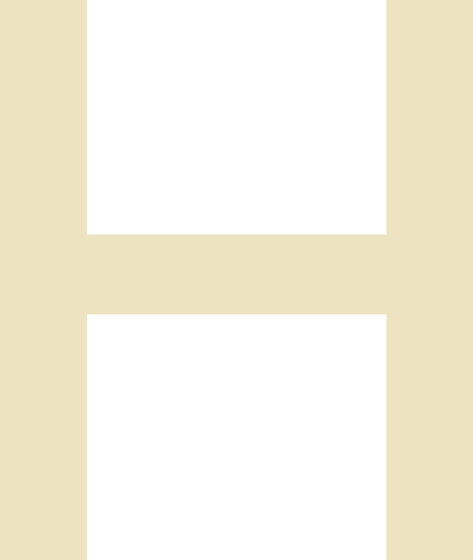

time to count your time. find out at last how long it takes to get things done.
get paid for every working hour. see how much time different tasks require.
plan time you’ll need for these tasks in the future. get rid of distractions.
decide if it’s worth doing. focus only on things that matter.

meet hourly. an app for those who get paid by the hour. or those who want more control over their working time. or other activities. reading books, for example. if you was always curious about how much time you spend on books, use hourly
 


say, you’re paid an hourly wage. the more you work, the more you earn. but there’s a lot of sidework
around.you need to remember when you started and stopped, then write it down carefully. really frustrating job.
with hourly all you need is to tap play, pause, and stop. this is it.
for salaried employees the app works as a to-do list and reveals tasks taking too long. you’ll know when your work is productive and when to stop polishing, delegate, or set more realistic deadlines.

apart from work, hourly is useful for planning personal projects and limiting time parasites. check out: seems like the designer of hourly spends more time per month on cigarettes than on his pet – definitely, something needs to be rescheduled.